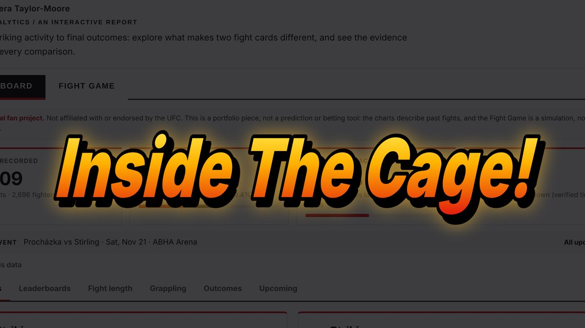

Sports analytics
Inside the Cage
A live UFC stats dashboard and a stats-driven fight game. Can real fight statistics drive a simulation whose results look like the real UFC?
Personal project · Oct 2026–present · Live demo